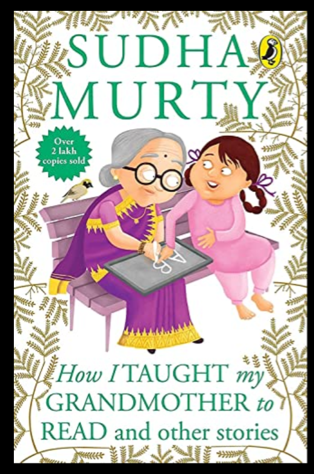

I am Mounika Jakkula. I am tech enthusiast. I have completed my bachelors in computer science in the year 2020. After that I joined DXC technology and worked there for 2.5 years as Professional 1 Information security engineer. Now I am currently pursuing my masters in applied computer science at Northwest missouri state university.
In How I Taught My Grandmother To Read, Sudha Murty describes the determined efforts of an illiterate old lady Krishtakka to make herself literate. She decided to read a novel on her own. The grandmother set the deadline and achieved the target next to impossible within the time set for it.
